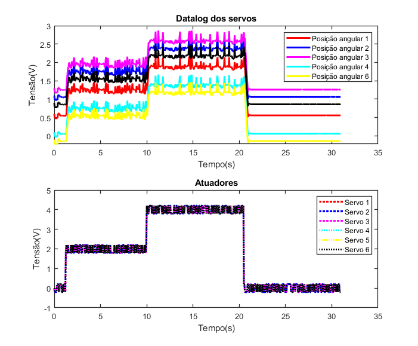
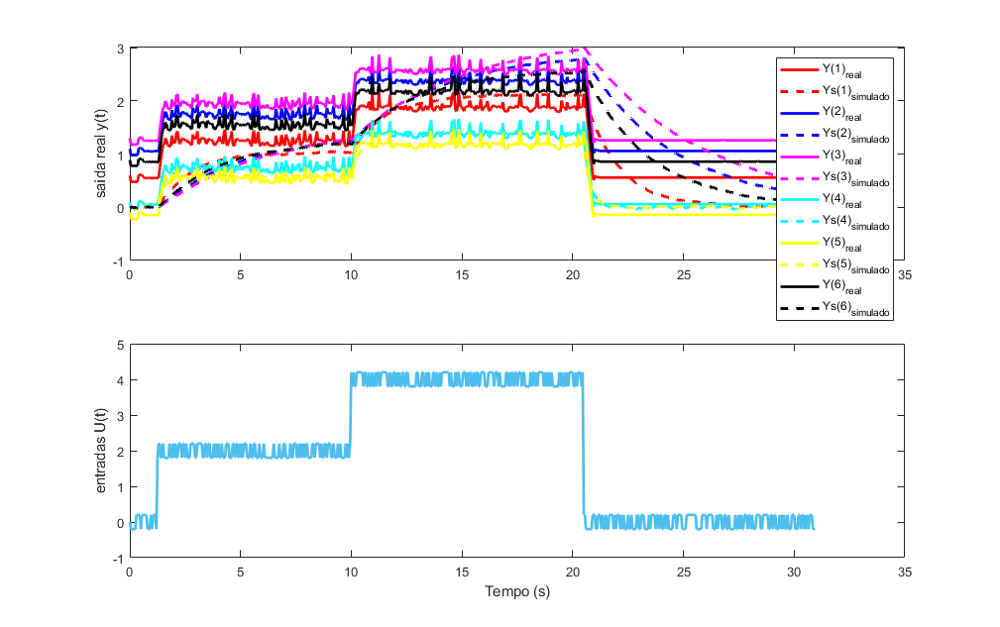
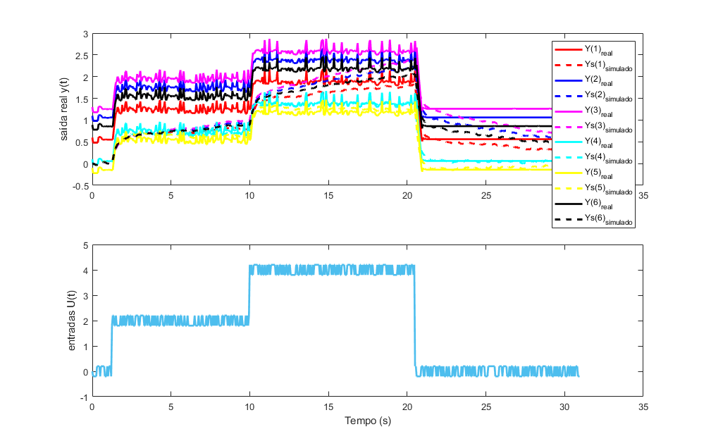
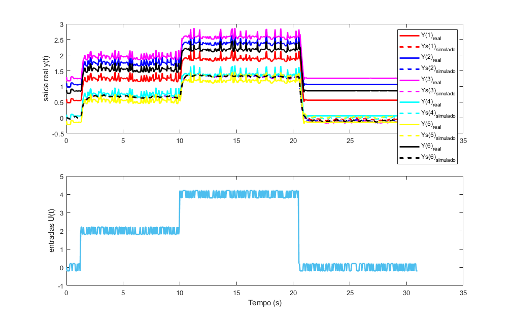

Contents
- Aquisição e identificação multivar:
- Etapa 1: Sinal de entrada do modelo
- Etapa 2): Conexão entre MATLAB, arduino e a planta
- Visualisação do Datalog
- Etapa 3) Ajuste do datalog
- Etapa 4) Identificação do modelo
- Etapa 4.2) Modelo Arx
- Etapa 4.2) Minimos quadrados SS
- Etapa 4.3) Subespaço n4sid
- Etapa 5) Avaliação das respostas do modelo_1 e modelo_2 identificados
- Etapa 5.2 validação do modelo 1
- Etapa 5.1 validação do modelo 2
- Etapa 5.2 validação do modelo 3
Aquisição e identificação multivar:
Tutorial para a aquisição de datalog e identificação de modelo em Espaço de estados ME.ENG.Bruno Gomes Dutra
clear all; close all; clc;
Etapa 1: Sinal de entrada do modelo
Vetor de entrada do modelo, pode ser um sinal quadrado, uma entrada ao degrau ou até mesmo um impulso. Obs: è interessante também adicionar um sinal PRBS.
% Esse sinal é utilizado para acionar os atuadores com o objetivo de medir % posteriormente o sinal de saída u1(1:25)=0; u1(26:200)=2; u1(201:410)=4; u1(411:620)=0; % Para o caso de um sistema Multivar, com várias entradas e saídas % Podemos atribuir mais entradas, ex: u2, u3, u4 ... uN nit = length(u1); % numero de interações com base no tamanho de u. u_prbs=create_prbs(0,0.2,0 ,9, 1, nit,1); u1=u1+u_prbs; % Para um braço robótico com 6 servos tem-se : u2=u1; u3=u1; u4=u1; u5=u1; u6=u1; % Tempo de amostragem utilizado para aquisição e pro controle Ts = 0.05; % 0.05 segundos é recomendável para uma comunicação estável entre arduino e o matlab
Etapa 2): Conexão entre MATLAB, arduino e a planta
delete(instrfindall); % função para limpar comunicações serias existentes daqduino_start('COM13',9600); % Inicia a comunicação pela porta COM(N). %Obs: excolher a porta certa de acordo com o arduino for i=1:3 daqduino_write_Mimo(0,0,0,0,0,Ts); daqduino_read; daqduino_write_Mimo(0,0,0,0,0,Ts); end for k=1:nit, Y(k,:)=daqduino_read; % Leitura dos sinais de saída dos servos[ de 1 a 6] %%plota o sinal de saída em tempo real(Descomentar caso queira acompanhar o sinal) %plot(1:k,Y(:,1),'r' ,1:k,Y(:,2),'b',1:k,Y(:,3),'m',1:k,Y(:,4),'c',1:k,Y(:,4),'y',1:k,Y(:,6),'k'); %drawnow daqduino_write_Mimo(u1(k),u2(k),0,0,0,Ts); %Manda o sinal de entrada para o arduino atuar nos atuadores end % Y(1:10,:)=0; daqduino_end; % End the connection to the DaqDuino device.
DaqDuino started! Connection is open on port COM13 Available functions: daqduino_end(), daqduino_read(), daqduino_write(u(k),Ts). --------------------------------------------------- DAQ-Duino, 2013-2019. Laboratory of Control and Systems (LACOS, ufpa.br). Author:Bruno Gomes Dutra (brunodutra@ufpa.br). --------------------------------------------------- DaqDuino ended. --------------------------------------------------- DAQ-Duino, 2013-2015. Laboratory of Control and Systems (LACOS, ufpa.br). Group of Control and Systems (GCS, udesc.br). Author: Prof. Antonio Silveira (asilveira@ufpa.br). ---------------------------------------------------
Visualisação do Datalog
y1= Y(:,1); % sinal de saída 1 (primeiro servo) y2= Y(:,2); % Leitura do sinal de saída 2 (segundo servo) y3= Y(:,3); % Leitura do sinal de saída 3 (terceiro servo) y4= Y(:,4); % Leitura do sinal de saída 4 ... y5= Y(:,5); % Leitura do sinal de saída 5 ... y6= Y(:,6); % Leitura do sinal de saída 6 ... t=0:Ts:nit*Ts-Ts; % Vetor de tempo com base em Ts figure('units','normalized','outerposition',[.4 .05 0.559 0.925]) subplot(211) plot(t,y1,'r','linewidth',2.2); hold plot(t,y2,'b','linewidth',2.2); plot(t,y3,'m','linewidth',2.2); plot(t,y4,'c','linewidth',2.2); plot(t,y5,'y','linewidth',2.2); plot(t,y6,'k','linewidth',2.2); legend({'Posição angular 1','Posição angular 2','Posição angular 3','Posição angular 4','Posição angular 6'}); xlabel('Tempo(s)') ylabel('Tensão(V)') % legend('Ref_{força}','Força'); title('Datalog dos servos') set(gca,'fontsize',10); set(gca,'linewidth',1); subplot(212) plot(t,u1,':r','linewidth',2.5); hold on; plot(t,u2,' :b','linewidth',2.4); plot(t,u3,' :m','linewidth',2.3); plot(t,u4,' :c','linewidth',2.2); plot(t,u5,' :y','linewidth',2.1); plot(t,u6,' :k','linewidth',2.0); legend({'Servo 1','Servo 2','Servo 3','Servo 4','Servo 5','Servo 6'}); title('Atuadores') ylabel('Tensão(V)'); xlabel('Tempo(s)'); set(gca,'fontsize',10); set(gca,'linewidth',1); save("datalog.mat")
Current plot held
Etapa 3) Ajuste do datalog
U=[u1; u2; u3; u4; u5; u6]'; % vetor com todas as entradas datalog = iddata(Y,U,Ts); % variável com os dados de entada e saída
Etapa 4) Identificação do modelo
ordem=2; % escolha do projetista. O tamanho das matrizes(Ordem) vai interfirir na eficácia do modelo
numero_estados=6*ordem;
inputs=6
output=6
inputs =
6
output =
6
Etapa 4.2) Modelo Arx
%identifica um modelo arx para cada realação de entrada e saída % e suas respectivas relações de acoplamento % após isso encontra-se o seu equivalente em Espado de Estados (SS) d=size(datalog); output=1; inputs=1; for i= 1:d(2) sys(:,:,i) =armax(datalog(:,i,i),[ordem*ones(output,inputs), ordem*ones(output,inputs), zeros(output,inputs), zeros(inputs)]); end for i=1:d(2) Gz(i,i)=tf(tf(sys(:,:,i))); end Gzmin=ss(Gz,'min');% Para criar o modelo no espaço de estados [Ap,Bp,Cp,Dp,Ts]=ssdata(Gzmin);% Para obter as matrizes A B C SS_model1=ss(Ap,Bp,Cp,Dp,Ts) [Y1,X1]=lsim(SS_model1,U,t,zeros(size(Ap,1),1));
Warning: In the assignment "SYS(indices) = RHS," ignoring the input
names of RHS because of name conflicts with SYS.
Warning: In the assignment "SYS(indices) = RHS," ignoring the output
names of RHS because of name conflicts with SYS.
Warning: In the assignment "SYS(indices) = RHS," ignoring the input
names of RHS because of name conflicts with SYS.
Warning: In the assignment "SYS(indices) = RHS," ignoring the output
names of RHS because of name conflicts with SYS.
Warning: In the assignment "SYS(indices) = RHS," ignoring the input
names of RHS because of name conflicts with SYS.
Warning: In the assignment "SYS(indices) = RHS," ignoring the output
names of RHS because of name conflicts with SYS.
Warning: In the assignment "SYS(indices) = RHS," ignoring the input
names of RHS because of name conflicts with SYS.
Warning: In the assignment "SYS(indices) = RHS," ignoring the output
names of RHS because of name conflicts with SYS.
Warning: In the assignment "SYS(indices) = RHS," ignoring the input
names of RHS because of name conflicts with SYS.
Warning: In the assignment "SYS(indices) = RHS," ignoring the output
names of RHS because of name conflicts with SYS.
SS_model1 =
A =
x1 x2 x3 x4 x5 x6 x7 x8
x1 0.7906 0.3438 0 0 0 0 0 0
x2 0.5 0 0 0 0 0 0 0
x3 0 0 0.8066 0.358 0 0 0 0
x4 0 0 0.5 0 0 0 0 0
x5 0 0 0 0 0.8146 0.3488 0 0
x6 0 0 0 0 0.5 0 0 0
x7 0 0 0 0 0 0 0.665 0.2787
x8 0 0 0 0 0 0 0.5 0
x9 0 0 0 0 0 0 0 0
x10 0 0 0 0 0 0 0 0
x11 0 0 0 0 0 0 0 0
x12 0 0 0 0 0 0 0 0
x9 x10 x11 x12
x1 0 0 0 0
x2 0 0 0 0
x3 0 0 0 0
x4 0 0 0 0
x5 0 0 0 0
x6 0 0 0 0
x7 0 0 0 0
x8 0 0 0 0
x9 0.6907 0.2631 0 0
x10 0.5 0 0 0
x11 0 0 0.8055 0.3491
x12 0 0 0.5 0
B =
u1 u2 u3 u4 u5 u6
x1 0.125 0 0 0 0 0
x2 0 0 0 0 0 0
x3 0 0.125 0 0 0 0
x4 0 0 0 0 0 0
x5 0 0 0.125 0 0 0
x6 0 0 0 0 0 0
x7 0 0 0 0.25 0 0
x8 0 0 0 0 0 0
x9 0 0 0 0 0.25 0
x10 0 0 0 0 0 0
x11 0 0 0 0 0 0.125
x12 0 0 0 0 0 0
C =
x1 x2 x3 x4 x5 x6
y1 0.1707 -0.02112 0 0 0 0
y2 0 0 0.1022 -0.03445 0 0
y3 0 0 0 0 0.09002 -0.03491
y4 0 0 0 0 0 0
y5 0 0 0 0 0 0
y6 0 0 0 0 0 0
x7 x8 x9 x10 x11 x12
y1 0 0 0 0 0 0
y2 0 0 0 0 0 0
y3 0 0 0 0 0 0
y4 0.2673 0.007942 0 0 0 0
y5 0 0 0.2126 -0.001918 0 0
y6 0 0 0 0 0.1269 -0.04365
D =
u1 u2 u3 u4 u5 u6
y1 -0.007679 0 0 0 0 0
y2 0 -0.01203 0 0 0 0
y3 0 0 -0.01251 0 0 0
y4 0 0 0 0.007124 0 0
y5 0 0 0 0 -0.001823 0
y6 0 0 0 0 0 -0.01563
Sample time: 0.05 seconds
Discrete-time state-space model.
Etapa 4.2) Minimos quadrados SS
Utiliza-se a técnica de minimos quadrados recursivo (Recursive Least Square) para encontrar as matrizes A B e C do modelo
[A,B,C,GAMA,W,V,AIC,fit,R2_,emq_]=ident_MQR_SS_master(Y,U,Ts,ordem) SS_model2=ss(A,B,C,0,Ts); % Modelo discreto % [Y2,X2]=dlsim(A,B,C,0,U,[ones(numero_estados,1)*Y(1,1)]); [Y2,X2]=lsim(SS_model2,U,t,zeros(numero_estados,1));
Ruido de medida v(k): media=0.66809 0.67095 0.67317 0.66939 0.6692 0.67299; variancia=0.3196 0.3194 0.31952 0.3196 0.31948 0.31927
A =
Columns 1 through 7
0.1508 0.0136 0.1517 -0.0559 0.1500 0.0040 0.1265
-0.4388 0.1951 -0.0520 -1.0396 0.1004 0.1396 -1.0189
0.1375 0.0141 0.2957 -0.0579 0.3568 0.0015 -0.0429
-0.3408 0.3413 -0.0637 -1.3103 0.0872 0.1651 -1.0454
0.1331 0.0152 0.3531 -0.0597 0.4394 0.0015 -0.1100
-0.2616 0.3290 -0.0076 -1.1996 0.0316 -0.0175 -1.0590
0.1656 0.0135 0.0083 -0.0575 -0.0571 0.0067 0.2960
-0.2201 0.2905 -0.0009 -1.2532 0.0385 0.1981 -1.1027
0.1711 0.0128 -0.0491 -0.0559 -0.1397 0.0084 0.3634
-0.1953 0.2920 0.0175 -1.2542 0.0552 0.1970 -1.0440
0.1450 0.0149 0.2385 -0.0595 0.2735 0.0043 0.0253
-0.1616 0.3216 0.0448 -1.2756 0.0764 0.1265 -1.0424
Columns 8 through 12
0.0208 0.1322 -0.0151 0.1572 0.0436
0.3333 -0.9900 -0.1490 0.0941 0.7747
0.0248 -0.1000 -0.0134 0.2390 0.0429
0.4529 -1.0216 -0.2359 0.0608 0.8328
0.0279 -0.1925 -0.0145 0.2713 0.0425
0.6020 -1.0399 -0.3433 0.0200 0.8711
0.0251 0.3636 -0.0248 0.0749 0.0474
0.4594 -1.0409 -0.3640 -0.0227 0.8984
0.0243 0.4557 -0.0287 0.0416 0.0490
0.5618 -1.1055 -0.5938 -0.0992 1.0186
0.0276 -0.0077 -0.0210 0.2053 0.0462
0.5710 -1.1119 -0.3932 -0.1879 0.8642
B =
0.0074 0.0074 0.0074 0.0074 0.0074 0.0074
0.1303 0.1303 0.1303 0.1303 0.1303 0.1303
0.0065 0.0065 0.0065 0.0065 0.0065 0.0065
0.1312 0.1312 0.1312 0.1312 0.1312 0.1312
0.0061 0.0061 0.0061 0.0061 0.0061 0.0061
0.1307 0.1307 0.1307 0.1307 0.1307 0.1307
0.0083 0.0083 0.0083 0.0083 0.0083 0.0083
0.1324 0.1324 0.1324 0.1324 0.1324 0.1324
0.0087 0.0087 0.0087 0.0087 0.0087 0.0087
0.1336 0.1336 0.1336 0.1336 0.1336 0.1336
0.0068 0.0068 0.0068 0.0068 0.0068 0.0068
0.1342 0.1342 0.1342 0.1342 0.1342 0.1342
C =
Columns 1 through 7
1.0000 -0.0000 -0.0000 0.0000 -0.0000 -0.0000 0.0000
-0.0000 0.0000 1.0000 -0.0000 -0.0000 0.0000 0.0000
-0.0000 0.0000 0.0000 -0.0000 1.0000 0.0000 0.0000
0.0000 0.0000 -0.0000 -0.0000 0.0000 -0.0000 1.0000
0.0000 -0.0000 -0.0000 0.0000 0.0000 -0.0000 0.0000
0.0000 -0.0000 -0.0000 0.0000 0.0000 -0.0000 0.0000
Columns 8 through 12
-0.0000 -0.0000 0.0000 0.0000 -0.0000
-0.0000 0.0000 0.0000 0.0000 -0.0000
-0.0000 0.0000 -0.0000 -0.0000 0.0000
-0.0000 -0.0000 0.0000 0.0000 -0.0000
0.0000 1.0000 0.0000 0.0000 -0.0000
-0.0000 0.0000 -0.0000 1.0000 -0.0000
GAMA =
Columns 1 through 7
0.0567 -0.0239 0.0753 0.0075 0.0870 0.0178 0.0171
-0.4254 -0.9270 0.0278 0.1015 0.3196 0.5060 -1.0599
0.0565 -0.0265 0.0780 0.0040 0.0916 0.0158 0.0141
-0.2941 -0.4872 0.0437 -0.1016 0.3200 0.4460 -1.0154
0.0566 -0.0273 0.0782 0.0020 0.0927 0.0141 0.0131
-0.2531 -0.3154 0.0643 0.2489 0.2481 0.0936 -1.0469
0.0614 -0.0242 0.0754 0.0117 0.0840 0.0224 0.0240
-0.1809 -0.2550 0.1003 0.3303 0.2814 0.4484 -1.0423
0.0609 -0.0238 0.0736 0.0125 0.0816 0.0249 0.0240
-0.1952 -0.2842 0.0831 0.3597 0.2687 0.5769 -1.0336
0.0588 -0.0282 0.0773 0.0059 0.0896 0.0167 0.0161
-0.1555 -0.3170 0.1165 0.3999 0.2980 0.6682 -1.0088
Columns 8 through 12
-0.0092 0.0101 -0.0308 0.0698 -0.0077
0.0749 -1.1846 -0.3888 0.0347 0.0900
-0.0052 0.0058 -0.0313 0.0719 -0.0057
-0.0332 -1.1333 -0.4955 0.0358 0.1136
-0.0019 0.0039 -0.0345 0.0719 -0.0026
-0.1371 -1.1682 -0.6231 -0.0209 0.1804
-0.0102 0.0179 -0.0443 0.0694 -0.0020
-0.5608 -1.1243 -0.6946 -0.0260 0.1731
-0.0140 0.0183 -0.0452 0.0673 -0.0001
-0.0805 -1.2218 -1.0704 -0.1203 -0.0443
-0.0034 0.0075 -0.0406 0.0708 -0.0004
0.0424 -1.1999 -0.8791 -0.1732 -0.4607
W =
Columns 1 through 7
0.0042 1.6236 0.0043 1.6579 0.0045 1.6827 0.0045
Columns 8 through 12
1.7051 0.0046 1.6923 0.0044 1.7019
V =
0.3196 0.3194 0.3195 0.3196 0.3195 0.3193
AIC =
1.5799
fit =
34.3514
-20.4141
-42.3760
83.9921
81.5779
1.4928
R2_ =
66.9974 -10.9629 -55.1894 98.0377 97.4021 25.7685
emq_ =
1.5748
Etapa 4.3) Subespaço n4sid
Técnica n4sid de identificação multivar
[SYS3, X0]=n4sid(datalog,numero_estados); % Identificação do modelo em Espaço de estados SS_model3=ss(SYS3.A,SYS3.B,SYS3.C,SYS3.D,Ts); % Modelo discreto % [Y3,X3]=lsim(SYS3.A,SYS3.B,SYS3.C,SYS3.D,U,t,zeros(numero_estados,1)); [Y3,X3]=lsim(SS_model3,U,t,zeros(numero_estados,1));
Etapa 5) Avaliação das respostas do modelo_1 e modelo_2 identificados
Etapa 5.2 validação do modelo 1
figure('units','normalized','outerposition',[0 0 0.8 1]) title("Validação do modelo2") subplot(211), plot(t,y1,'r','linewidth',2); hold plot(t,Y1(:,1),'--r','linewidth',2.2); plot(t,y2,'b','linewidth',2); plot(t,Y1(:,2),'--b','linewidth',2.2); plot(t,y3,'m','linewidth',2); plot(t,Y1(:,3),'--m','linewidth',2.2); plot(t,y4,'c','linewidth',2); plot(t,Y1(:,4),'--c','linewidth',2.2); plot(t,y5,'y','linewidth',2); plot(t,Y1(:,5),'--y','linewidth',2.2); plot(t,y6,'k','linewidth',2); plot(t,Y1(:,6),'--k','linewidth',2.2); legend({'Y(1)_{real}','Ys(1)_{simulado}','Y(2)_{real}','Ys(2)_{simulado}','Y(3)_{real}','Ys(3)_{simulado}'... ,'Y(4)_{real}','Ys(4)_{simulado}','Y(5)_{real}','Ys(5)_{simulado}','Y(6)_{real}','Ys(6)_{simulado}' }); ylabel('saída real y(t)'); subplot(212), plot(t,U,'linewidth',2); ylabel('entradas U(t)'); xlabel('Tempo (s)');
Current plot held
Etapa 5.1 validação do modelo 2
figure('units','normalized','outerposition',[0 0 0.8 1]) title("Validação do modelo1") subplot(211), plot(t,y1,'r','linewidth',2); hold plot(t,Y2(:,1),'--r','linewidth',2.2); plot(t,y2,'b','linewidth',2); plot(t,Y2(:,2),'--b','linewidth',2.2); plot(t,y3,'m','linewidth',2); plot(t,Y2(:,3),'--m','linewidth',2.2); plot(t,y4,'c','linewidth',2); plot(t,Y2(:,4),'--c','linewidth',2.2); plot(t,y5,'y','linewidth',2); plot(t,Y2(:,5),'--y','linewidth',2.2); plot(t,y6,'k','linewidth',2); plot(t,Y2(:,6),'--k','linewidth',2.2); legend({'Y(1)_{real}','Ys(1)_{simulado}','Y(2)_{real}','Ys(2)_{simulado}','Y(3)_{real}','Ys(3)_{simulado}'... ,'Y(4)_{real}','Ys(4)_{simulado}','Y(5)_{real}','Ys(5)_{simulado}','Y(6)_{real}','Ys(6)_{simulado}' }); ylabel('saída real y(t)'); subplot(212), plot(t,U,'linewidth',2); ylabel('entradas U(t)'); xlabel('Tempo (s)');
Current plot held
Etapa 5.2 validação do modelo 3
figure('units','normalized','outerposition',[0 0 0.8 1]) title("Validação do modelo2") subplot(211), plot(t,y1,'r','linewidth',2); hold plot(t,Y3(:,1),'--r','linewidth',2.2); plot(t,y2,'b','linewidth',2); plot(t,Y3(:,2),'--b','linewidth',2.2); plot(t,y3,'m','linewidth',2); plot(t,Y3(:,3),'--m','linewidth',2.2); plot(t,y4,'c','linewidth',2); plot(t,Y3(:,4),'--c','linewidth',2.2); plot(t,y5,'y','linewidth',2); plot(t,Y3(:,5),'--y','linewidth',2.2); plot(t,y6,'k','linewidth',2); plot(t,Y3(:,6),'--k','linewidth',2.2); legend({'Y(1)_{real}','Ys(1)_{simulado}','Y(2)_{real}','Ys(2)_{simulado}','Y(3)_{real}','Ys(3)_{simulado}'... ,'Y(4)_{real}','Ys(4)_{simulado}','Y(5)_{real}','Ys(5)_{simulado}','Y(6)_{real}','Ys(6)_{simulado}' }); ylabel('saída real y(t)'); subplot(212), plot(t,U,'linewidth',2); ylabel('entradas U(t)'); xlabel('Tempo (s)');
Current plot held